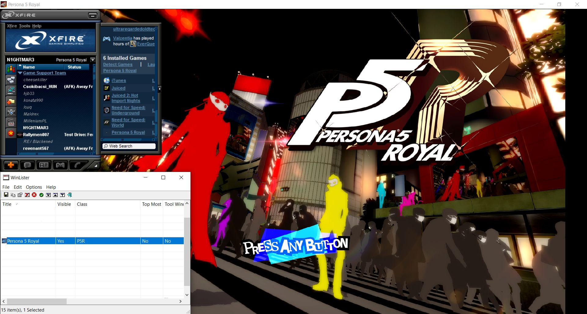

Disclaimer: I am not affiliated with the Xf1re project, the original Xfire program, or any developers involved with either. I'm just a fan who likes the software and wants to make it easier for everyone to contribute working game entries.
Explanation: This information as it stands is pooled from both the Xfire Games Customizer program by Trainhappy and hypnotoadtrance, and the Xfire GameMasters Wiki on Fandom. The Description and Notes (Customizer) columns are taken from the former, and the Notes (Gamemasters) column from the latter. This information by the original authors is directly pasted in unless specified otherwise, and I take no ownership or responsibility for any of it. Xfire Games Customizer is under the public domain, and the content of the Xfire GameMasters Wiki is licensed under the Creative Commons Attribution-Share Alike License 3.0 (Unported) (CC BY-SA).
| Flag | Description | Notes (Customizer) | Notes (Gamemasters) |
|---|---|---|---|
| ACTIVATE_APP | |||
| BLOCK_ASYNC | Validate Input | Use this when some keys are passing through, but not others. | This flag is used when some keys are passing through, but not others. Call Of Duty is an example. |
| CLEAR_CLIP_CURSOR | |||
| CRASH_ENABLE | |||
| DDRAW_ACCELERATION | DDRAW_ACCELERATION seems to try and do hardware accelerated direct draw or modify the way Xfire ingame appears. Of course this would only work on XP or older Windows operating systems since Direct Draw is very outdated and most games using it are software accelerated anyways so this flag is insanely uncommon. Another issue that arises is sometimes it seems to keep affecting the game's ability to have an Xfire ingame overlay and sometimes you have to switch renderers to make it work again. | ||
| DDRAW_FLIP_MODE | DDRAW Flip (Direct Draw Only) | Flips the DDRAW 1 and 2 buffers to be 2 and 1. | This flag flips the DDRAW 1 and 2 buffers to be 2 and 1. |
| DDRAW_OVERLAY_MODE | |||
| DISABLE_64BIT | This flag disables Xfire In Game on 64bit applications. Handy for games that have the potential of using either 32bit or 64bit applications and 64bit instantly-crashes. Prime example is Minecraft with 64bit Java installed (please support 64bit Xfire!!!) | ||
| DISABLE_ALERTS | No Xfire Alerts | Removes Xfire In-game alerts. | This flag disables only the Xfire ingame alert window. Very uncommon flag. |
| DISABLE_BROWSER | This flag disables only the Xfire ingame 2.0 web browser. Very uncommon flag. | ||
| DISABLE_DIRECT_INPUT_HOOK | This flag is another method to try and change the way Xfire in game hooks into the game. Sometimes it can affect the keyboard and mouse bleed through problems, other times it can be used if Direct Input causes framerate issues (IE, Jupiter EX engine games like FEAR1 and Condemned: Criminal Origins). | ||
| DISABLE_FOR_VISTA | This flag disables Xfire ingame for Windows Vista and Windows 7. This flag was primarily used at the launch of Windows Vista on games where User Account Control was needed and Xfire couldn't attain permissions properly at the time. | ||
| DISABLE_KEYBOARD_HOOK | This flag is used to completely disable the keyboard hook of Xfire ingame. Very uncommon flag. | ||
| DISABLE_RELEASE | Common problem in games. Release gets called and throw away textures and information. Typically happens when the game closes or is alt+tabbed if not handled properly can crash the game or Xfire. This flag corrects that crash. | ||
| DISABLE_SCREENSHOTS | Disable Screenshots | Disables in-game screenshots. | This flag is used to disables capturing screenshots with Xfire ingame. Very handy for games in Alpha/Beta tests with Non-Disclosure Agreements (NDA) that will ban users for taking screenshots or video footage. |
| DISABLE_VIDEO_CAPTURE | This flag is used to disables both video recording and broadcasting with Xfire ingame. Very handy for games in Alpha/Beta tests with Non-Disclosure Agreements (NDA) that will ban users for taking screenshots or video footage. | ||
| DISPATCH_CONURE_MESSAGES | Keep Link Alive | When messages are not being sent between the game and Xfire, this re-establishes the communication between ingame and Xfire. | When messages are not being sent between the game and Xfire. This re-establishes communication between ingame and Xfire. |
| ENABLE_MOUSE | This flag is used to enable Xfire ingame 2.0 which includes mouse support, web browser and better user interface for controlling broadcasting, music player and video recording. It's also much easier to edit the placement and transparency of the Xfire ingame windows. | ||
| FIX_FLICKER | |||
| FORCE_REHOOK | |||
| HG_FIX | |||
| HIDE_CURSOR | |||
| MULTIPLE_WINDOWS | Use Proper Window | Use this to ensure that Xfire is the top-most window (ei; Xfire might be getting drawn BEHIND the game, so you can't see Xfire in-game) | This flag is used to help Xfire display properly on games with multiple windows. The original Starcraft is a prime example. |
| NO_DINPUT_KEYCHECK | Don't Check Direct Input | Don't grab key presses from Direct Input. | NO_DINPUT_KEYCHECK Is handy when a game has problems where the keys bleed into the game or don't work with Xfire In-Game chat. |
| NO_HIDE_CURSOR | |||
| OGL_EXTRA_HOOKS | OGL_EXTRA_HOOKS was first introduced with Xfire ingame since the beginning of Xfire ingame supporting OGL. It was added to every game using OGL... I'm guessing they just eventually incorporated it into OGL coding cause every current game support update has never included this flag so it can be pretty much deemed obsolete. If coding though and you can't get a game to work with OGL? You can try this just in case but I doubt it will bring you much luck. | ||
| PIG_MODE | Unused and undocumented thus far. | ||
| REINSTALL_KEYBOARD_HOOK | This game uses anti-keylogger software | The game attempts to prevent keylogging so Xfire's hooks get dumped. This tells it to reinstall the keyboard hooks. | The game attempts to prevent keylogging so Xfire's hooks get dumped. This flag tells it to reinstall keyboard hook. |
| SKIP_DEVICE_RELEASE | Prevent Xfire Crash | Use this if Xfire in-game works, but then is prone to crashing. | This flag prevents Xfire from getting released. This should not be used on all games as sometimes it can prevent Xfire ingame from even working. |
| SUBCLASS_WNDPROC | |||
| USE_DINPUT1 | Use Direct Input 1 | When DINPUT8 does not work or allow Xfire to hook in, use this instead. | This flag is used if Xfire ingame will not work with the default direct input 8 hooking method. Generally this is used on older games. |
| USE_DINPUT_MOUSE | Alternate Mouse (Extended Interface Only) | Use this if the mouse doesn't work with Xfire in-game. | This flag is used if the mouse is bleeding into the game from the Xfire ingame chat 2.0 window. Very handy and used very often in a lot of games. |
| USE_PRESENT | Safe Textures (Direct3D only) | Use this if Xfire in-game causes graphical errors in-game. | USE_PRESENT is used for games generally with D3D9 where sometimes Xfire can affect in-game textures. Prime examples are Deus Ex (sometimes Xfire In-Game chat text can go onto alarm buttons) and The Elder Scrolls Oblivion (where the Xfire In-Game window would sometimes cast shadows in-game! Dynamic Shadows FTW! LOL!) |
| USE_SWAPCHAIN | USE_SWAPCHAIN is used when the renderer uses swapchains which can affect wether the Xfire In-Game overlay works or not. Sometimes using in-game debugging (Tools > Options > Advanced) it will show you if you need to have the in game flag of USE_SWAPCHAIN. Example games are Project Blackout and Battlefield Bad Company 2. | ||
| USE_WINDOWS_INPUT | Use Windows Input | Uses input from Windows, instead of Direct Input | This flag is used if the game will not detect Xfire via the default keyboard hook method or direct input 1. Uncommon flag since keys will still bleed into the game in most cases. |
| VALIDATE_USING_EXE_NAME | This game uses nProtect/Gameguard | Allows use of Xfire in-game in protected games. | Generally used in Korean MMORPGs that use nProtect or GameGuard. It verifies against the .exe instead of the ProcessID. This allows Xfire to detect and display Xfire ingame properly. |
| VERIFY_THREADID | Verify Core/Thread | Use this if Xfire in-game doesn't work/crashes and the game runs on more than one core or thread. | |
| WEBGAME | |||
| WGLSWAPLAYERBUFFERS | Swap Player Buffers | Some games use swap player buffers instead of the norm, and this corrects that issue. | Some games use swap player buffers instead of the norm, this corrects that issue. |
| WOLF_ETPRO | This flag allows us to not be detected as a cheat in Wolfenstein: Enemy Territory. [link redacted] |
Problem: Your status in Xfire displays "Online" or "Away From Keyboard (AFK)" despite having a game running that Xf1re registers as installed.
Potential solution: try adding the PlayingDetectType property, plus the ProcessWindowTitle and/or ProcessWindowClass properties, under the game entry in xfire_games.ini.
PlayingDetectType supports one of four values:
ByWindow simply checks for an open window. ByProcessWindow checks for any open process, even if it is in the background. The Substr variants stand for "substrate", and refer to any running program that is split into multiple processes. (Firefox and Chromium browsers are an example of this; check the Details tab under Task Manager and you'll see them listed several times.)
Based on which detect type you choose, Xf1re will look for any window based on the criteria given with the ProcessWindowTitle and/or ProcessWindowClass properties. ProcessWindowTitle simply checks the title of the window: if the given substring is found in the title of any open window, Xfire will recognize it as the game in question. ProcessWindowClass goes a step deeper and checks for the window's class instead, which can be preferred for games that have a changing or inconsistent window title, or to avoid false positives. NirSoft's WinLister can be used to find the class of any open window.
As an example of these properties in action, take the game Persona 5 Royal.
Under normal circumstances, Xf1re will not be able to detect the game running. However, by adding the following code to its game entry with the help of WinLister:
PlayingDetectType=ByWindow
ProcessWindowTitle=Persona 5 Royal
ProcessWindowClass=P5R
Xf1re is now able to detect the game running. Notice how the status next to my name near the top of the Xf1re window reads "Persona 5 Royal". (Ignore its absence in my friends list, that's just because the game hasn't been submitted to Xf1re yet.)
Bear in mind, this solution isn't guaranteed to work. For currently unknown reasons, some games won't be detected by Xf1re even with these properties in place.